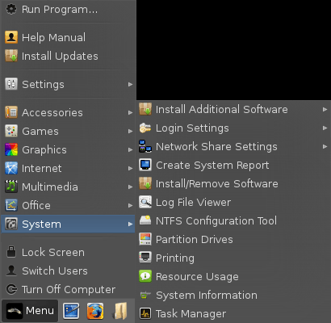
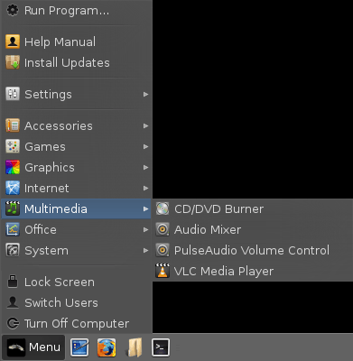
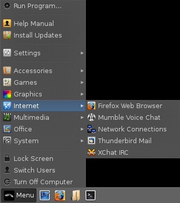
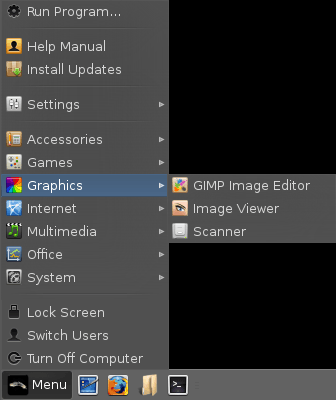
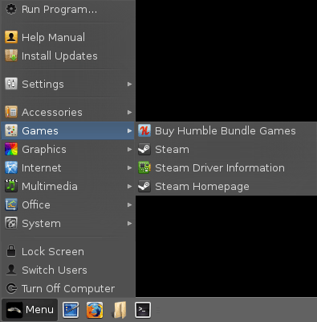

Welcome to Linux Lite - simple, fast, free.
|
Version: 1.0.6 | Date:
5th September, 2013 | Authors: Adam
Grubbs, John "ShaggyTwoDope" Jenkins, Jerry Bezencon |
Thank you for choosing the Linux Lite Operating System.
By producing an easy to use Linux based Operating System, we hope that people will discover just how simple it can be to use an operating system like Linux Lite.
Operating System:
Release Name: Linux Lite 1.0.6
Architecture: 32bit and 64bit
Software Base: Ubuntu 12.04.2 LTS
Desktop Environment: XFCE 4.8
Media Type: DVD, 2gb or larger USB device
Online Support: Click here
Keyboard Shortcuts:
Ctrl+Alt+T - opens a terminal.
Windows key+H - opens your home folder.
Ctrl+Alt+Delete - locks the screen.
Alt+F2 - opens the Run Program dialogue box.
Printscreen key - opens the screenshot program.
Included Software: GParted, LibreOffice Writer,
LibreOffice Calc, Scanner, Bluetooth, XFBurn CD/DVD Burner, VLC Media Player,
Firefox Web Browser with Flash, OpenJDK Java,
Steam, Mumble Voice Chat, Thunderbird Email, XChat IRC Client, Gimp
Image Editor, Leafpad Text Editor, Xarchiver.
Post-Installation: If you have any wireless, wired,
graphics card devices or other hardware devices,
click on Menu, Settings, Install Drivers. Please read the information
provided very carefully before choosing a suitable driver. It is usually
best to choose the recommended driver. You can look through how to
connect to the internet by clicking here.
More information on drivers can be found
here.
Secure Boot and UEFI:
Linux Lite is an Ubuntu based operating system. Secure boot
is only currently supported with 64bit Ubuntu based
operating systems from versions 12.04.2 onwards. If you
plan to use the Linux Lite 32bit version, and you have a computer with secure
boot, you will need to disable it in the Bios before installing
Linux Lite. More information about UEFI and Secure Boot can be
found
here.
The computer below is an HP laptop with Secure Boot disabled and
UEFI set to Legacy mode with Linux Lite 1.0.6 installed.

On some laptops you may have to enable Numlock as it is disabled by default. You could also try FN + Numlock to use your keys, or FN + one of the F keys across the top of your keyboard. This varies from computer to computer.
This release of Linux Lite comes with a new tool, Create System Report. This tool helps our Support team more accurately identify any problems you may be having, thus providing you with better service. Click here to learn more about this.
If you cannot find the answer to your question in this manual, please choose from the following:
Forums:
Click here to get support for Linux Lite on the Linux Distro Community Forums. Please search the Forums before posting your question, chances are the question you have, has previously been answered.
Mumble:
Mumble is already installed under Internet in the Menu. The Linux Distro Community Mumble connection details have already been entered for you. Simply highlight Linux Distro Community click on Connect and it will take you into the Linux Distro Community Mumble server.
To talk, hold down and press F6 on your keyboard and then release when you have finished talking. This is known as Push to Talk. You may need to check your volume levels first, click here for sound configuration details.
IRC:
When you launch Menu, Internet, XChat IRC this will automatically connect you to the Linux Lite and Linux Distro Community chat rooms (in versions 1.0.6 and upwards). Please use the Linux Lite channel for support and the Linux Distro Community channel for general linux chat.
On older versions of Linux Lite (1.0.0 - 1.0.4) please follow these instructions for connecting to us via XChat:
From the XChat menu - XChat, Network List, scroll down to and highlight FreeNode, click Edit:
Servers for FreeNode: irc.freenode.net/8001
Favorite channels: #linuxdistrocommunity,#linuxlite
Tick Auto connect to this network at startup.
Click Close, then click on Connect.
Social Networks:
Facebook:
https://www.facebook.com/pages/Linuxlite/572323192787066
Twitter:
https://twitter.com/LinuxLite
Google+:
https://plus.google.com/103949434255183697553/
General software support:
If you are using a program for example Firefox, the first port of call should always be the developer and or creator/s directly. Most programs have a Help menu somewhere on their program. The Help menu will then have a link to their support area. This is where the experts are and you should receive excellent support. If after trying this you are still getting nowhere, feel free to use one of our above services. Because Linux Lite is based on the popular Ubuntu Operating System, many questions can also be answered by simply entering the issue you are having into your favorite search engine.
The menu system on Linux Lite has been greatly simplified to make navigation straight forward and intuitive.
System:

Install Additional Software - Gives you the option to install common applications
like a video editor, an instant messaging client etc. Installing software is easy, simply
follow the onscreen instructions and enter your password when asked.
Login Settings - Enable or disable automatic login for 1
user.
Network Share Settings - Here you can configure your
computer to connect to your Windows shares.
Create System Report - Creates a comprehensive hardware
and software report for your system.
Install/Remove Software - Install and Remove software.
Log File Viewer - View system your logs, helps with
troubleshooting.
NTFS Configuration Tool - Allows you to access ntfs file
systems on external drives (enabled by default).
Partition Drives - View and edit your hard drive
partitions.
Printing - Install and set up printers.
Resource Usage - Shows you how much cpu and memory your
computer is using. Also displays system processes.
System Information - View hardware like your cpu, memory,
graphics card etc in detailed information.
Task Manager - An overview of currently running computer
processes. Kill applications here to.
System/Install Additional Software:
Install File & Folder Search - Easily locate files and folders with Catfish.
Install Instant Messaging - Installs the Pidgin instant messaging client
so you can still chat on MSN, Yahoo, Google Talk, AIM, ICQ etc.
Install iPod Manager - Installs Gtkpod, a simple to use
iPod manager. See
www.gtkpod.org
for a list of capable devices.
Install Remote Desktop - Installs Remmina, allowing you to connect remotely to
existing Windows (RDP) computers and VNC servers.
Install Restricted Extras - Install additional multimedia
codec's.
Install Torrent Software - Installs Deluge, a popular, user friendly torrent client.
Install Video Editing Software - Installs Openshot (with Blender 3D), a simple to use video editor.
Install VirtualBox - VirtualBox allows you to run other Operating Systems from within Linux Lite.
Install Weather Monitor - Adds a Weather applet to your taskbar. Read the installer
for set up instructions.
Install Wine - Wine is a compatibility layer for Linux. Simply put, it
allows you to install and run a number of Windows programs on Linux.
See the installer for further information.
Office:
New Document -
Open LibreOffice Writer, an application similar to Microsoft
Word.
New Presentation -
Open LibreOffice Impress, an application similar to Microsoft
PowerPoint.
New Spreadsheet -
Open LibreOffice Calc, an application similar to Microsoft
Excel.
PDF Viewer - View PDF documents with this application.
Multimedia:

CD/DVD Burner -
A fully featured CD & DVD burning program - XFBurn.
Audio Mixer - General sound settings (should not be
required, use PulseAudio Volume Control)
PulseAudio Volume Control - Individually set volume
levels for each program that is running.
VLC Media Player -
A fantastic all around media player, play mp3's, avi's, mkv's
etc. Plays all your media files.
Internet:

Firefox Web Browser -
Browse the internet.
Mumble Voice Chat -
A voice chat program similar to Teamspeak and Ventrilo.
Thunderbird Mail -
Email program, send and receive email.
Network Connections - Manage and connect to wired, wireless,
3g and VPN networks.
XChat IRC -
IRC (Internet Relay Chat) A program used to chat in internet
chat rooms.
Graphics:

GIMP Image Editor -
A powerful, and fully featured image manipulation program with
features similar to Photoshop.
Image Viewer - Preview your pictures with this viewer.
Scanner - Scan your documents and pictures.
Games:

Buy
Humble Bundle Games - A link to the Humble Bundle games
website, an online indie games store.
Steam - The Steam for Linux client, with games like Team
Fortress 2 and Counterstrike, popular games now come to Linux.
Steam
Driver Information - Essential information for driver
requirements to run Steam. Please read first.
Steam Homepage - A link to the Steam homepage.
Accessories:
Application Finder - A handy pop up menu to all
your programs, by category and in alphabetical order.
Calculator - A basic calculator also capable of
scientific functions.
Home Folder - Your home folder.
Screenshot - Take a screenshot of a window, and
selected area, or the entire desktop.
Terminal - Sometimes referred to as the 'shell' a terminal
is a place to input various system commands.
Text Editor - A basic text editor, a program to type text
into.
Unzip/Compress Files - Extract zip, tar.gz files etc
to a location on your computer, usually the Home folder.
Run Program:
Clicking on this, you can run any program that is installed on the computer by its name. See the above picture for an example.
Help & Support: A link to this Help manual.
Install Updates: Checks for updates for Linux Lite. Click here to learn more about installing software and updates.